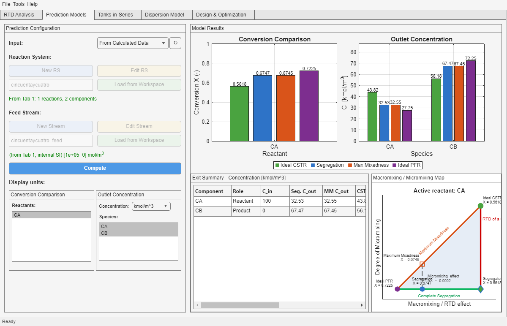

User Guide / Appendix - Results Interpretation
How to Read Comparison Plots and Summary Tables
This appendix is for the moment after the solver has already run and the question becomes: what is this difference telling me, and how much trust should I place in it? The app often shows several models side by side; the key is to read them as structured comparisons, not as isolated numbers.
Start with the Comparison Logic
| Question | Where it appears |
|---|---|
| How does the real RTD compare with ideal reactor limits? | Prediction Models and Reactive Performance |
| How sensitive is the answer to micromixing assumptions? | Prediction Models and Reactive Performance |
| How much does a manipulated input improve the target? | Optimization |
| How do all species move, not only the chosen objective species? | Exit Summary, concentration tables, and wide comparison tables |
Conversion, Selectivity, Yield, and Concentration Are Not the Same Story
- Conversion is meaningful for functional reactants.
- Selectivity and yield depend on both a chosen product and the reactant basis behind the metric.
- Outlet concentration remains meaningful for products and byproducts even when conversion does not.
Practical reading tip: when a product species is central to your decision, focus more on outlet concentration and on the selected selectivity/yield definitions than on forcing a conversion interpretation that is not physically appropriate.
Reading Prediction Models

- If Segregation and Maximum Mixedness are close, micromixing sensitivity is weak for the chosen kinetics.
- If both differ strongly from Ideal PFR or Ideal CSTR, the RTD itself is still important even if micromixing is not.
- The exit summary helps avoid tunnel vision by keeping all species visible at once.
Reading Tab 5 Reactive Performance

- Compare the ranking of the four models before focusing on any single value.
- Use the concentration table to confirm whether the chosen metric hides an important change in another species.
- If the fitted RTD changes the engineering story, revisit Diagnosis & Fit instead of treating the fit as automatically better.
Reading Optimization Results

| Result block | How to read it |
|---|---|
| Base vs Optimum | Shows the target, active decision variables, and active constraints before and after the search. |
| Wide four-model table | Checks whether the improved scenario still looks sensible across Ideal CSTR, Segregation, Maximum Mixedness, and Ideal PFR. |
Do not stop at the objective row: a mathematically improved objective may still come with undesirable shifts in other species or with limited robustness across reactor interpretations.
When Is a Difference Actually Important?
- Check absolute engineering scale, not only percentage change.
- Check whether the difference is larger than the uncertainty you already accept in RTD reconstruction or kinetics.
- Check whether the sign of the difference changes the design decision.
- Check whether multiple tables and plots tell the same story.
Common Interpretation Mistakes
| Mistake | Better reading |
|---|---|
| Treating all four models as equally realistic predictions | Read them as bounds, references, or alternative interpretations of the same hydrodynamic problem. |
| Using product conversion where outlet concentration is the real design variable | Switch to the metric that matches the decision you actually need to make. |
| Declaring an optimization successful from one improved scalar objective | Check the constraints and the full species table as well. |
| Reading tiny numeric gaps as deep physical differences | First ask whether the difference is large enough to matter in engineering practice. |